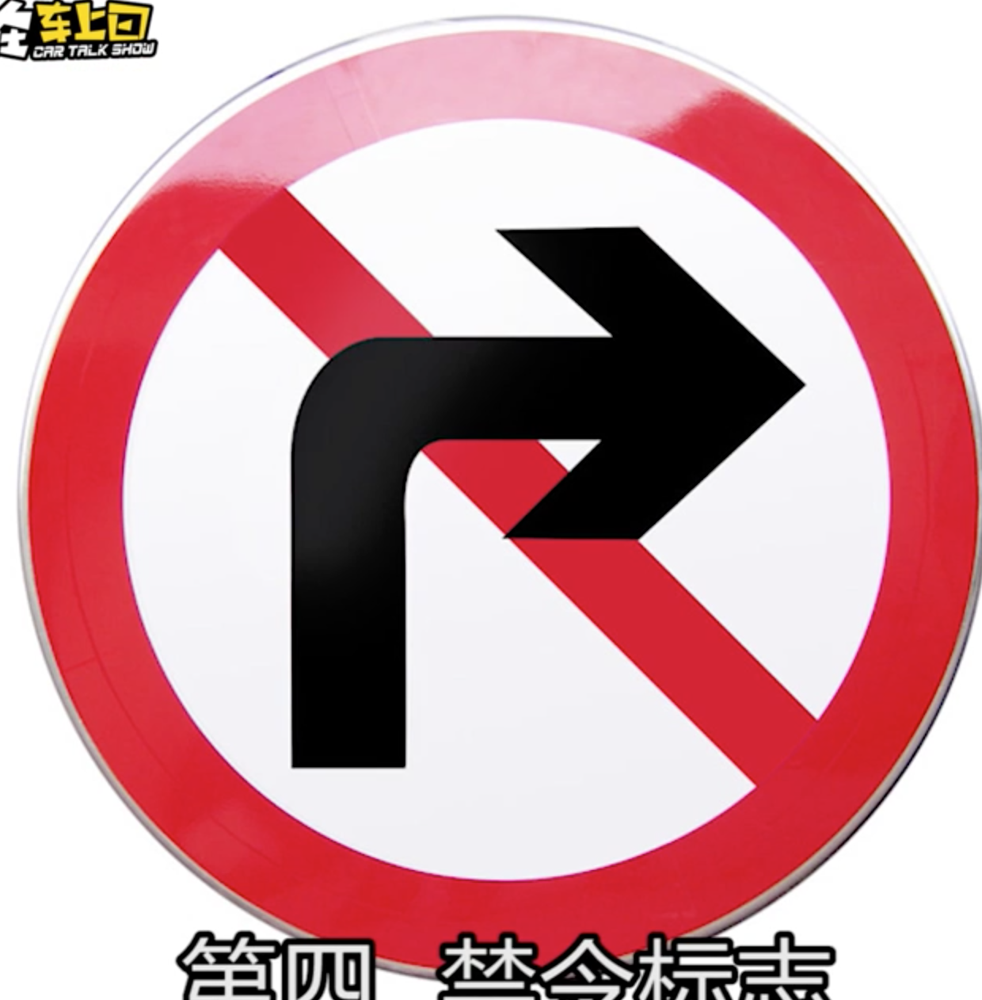
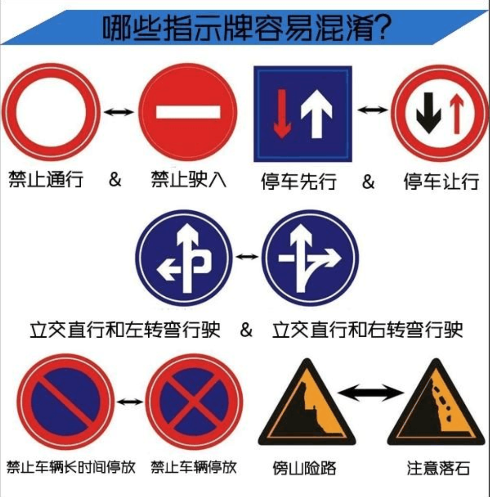
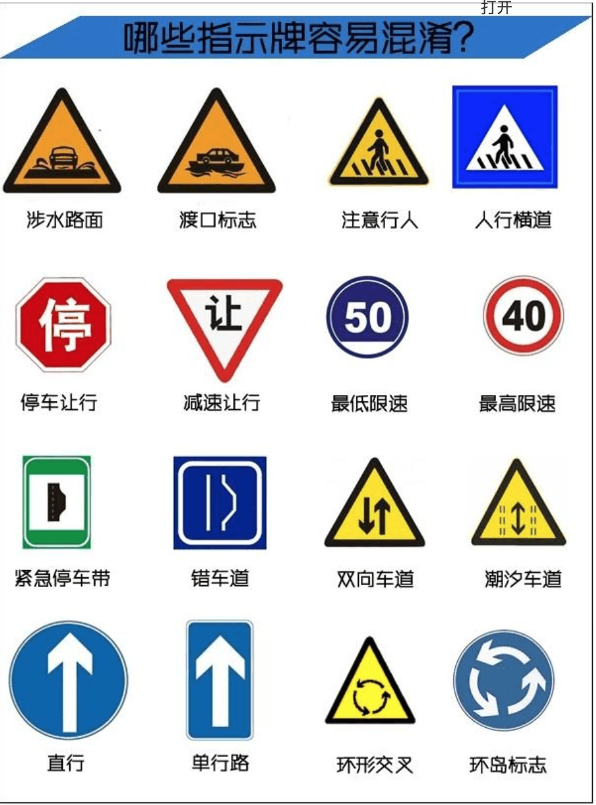

☰ 目录
20180809 识别道路交通指示牌
指路标志
常见如下：

作用： 一边就是指示目的地， 方向和距离； 以及高速公路的出入口，著名地点等所在地信息。
颜色： 蓝底 或是 绿色底 + 白图案；
在陌生地段，能帮助驾驶者定位及辨别方向；
蓝底色指路标识
通常与城市道路有关，

绿色指路标识
常与城市快速路及高速公路有关；
由于这两种路的通行距离更远， 路面车速较快，因此绿底色指路标志会更多的出现距离信息。并且比蓝底色路标指示牌提前更多的距离设置。
警告标志
警告车辆行人注意危险地点的标志，
颜色： 黄底 + 黑边 + 黑图案；

形状： 等边三角形； 颜色很显眼，通常设置在交通较为复杂的地点或市郊地区；

禁令标志
对车辆加以禁止或限制的标志， 除了个别标志外，
大部分为： 白底 + 红圈 + 图案；
压红框 + 黑图案等；
禁止标志通常与电子摄像头相结合， 不想破财的话，只能按照标志指示行车；

容易混淆的双胞胎指示牌


认清这些能搞定 90% 的交通标志了。